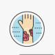

Lichen Planus
Rx
1.Oint Fluocinolone 0.025% N=1
2.Oint Hydrocortisone 1% N=1
3.Tab Cetirizine 10mg N=1
نکته: فلوسینولون هفته اول روزی 2بار هفته دوم روزی یکبار و سپس با بهبودی نسبی از یک کورتون ضعیف تر(هیدروکورتیزون) استفاده میکنیم
علائم پوستی بیماری با p شروع می شود:
✳️Pruritic
✳️Purple
✳️Polygonal
✳️Papules or plaques
✳️Polygonal
✳️Planar
پاپول ها یکسری خطوط سفید تار عنکبوت مانند به نام استریا ویکهام دارند
1️⃣پسوریازیس
Lichen Simplex Chronicus2️⃣
Pityriasis Rosea3️⃣
Tinea Corporis4️⃣
5️⃣درماتیت آتوپیک
6️⃣تظاهرات پوستی لوپوس